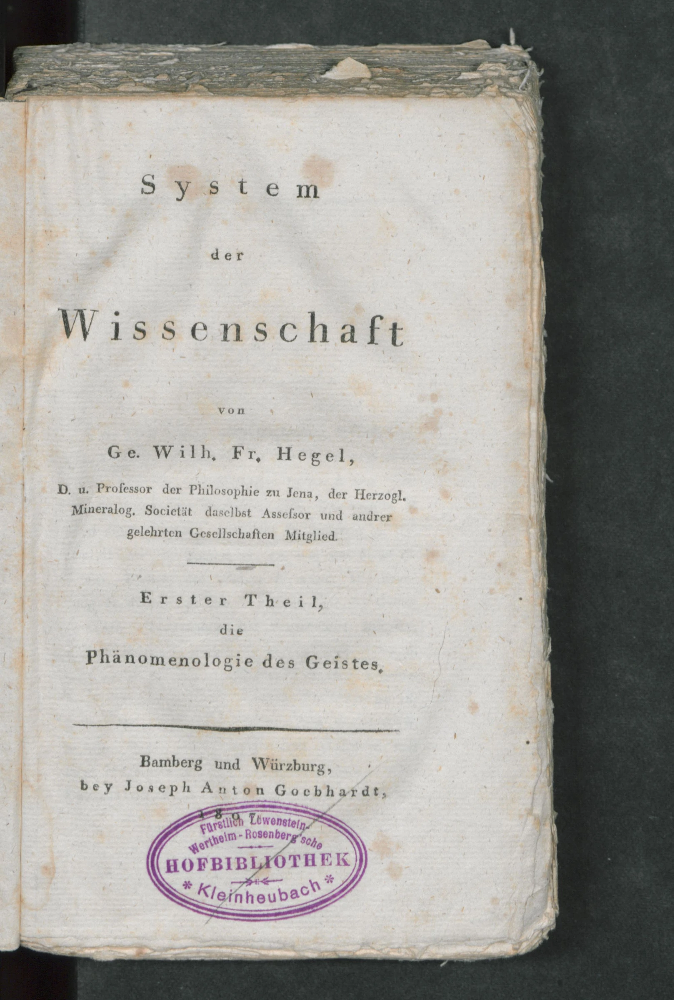
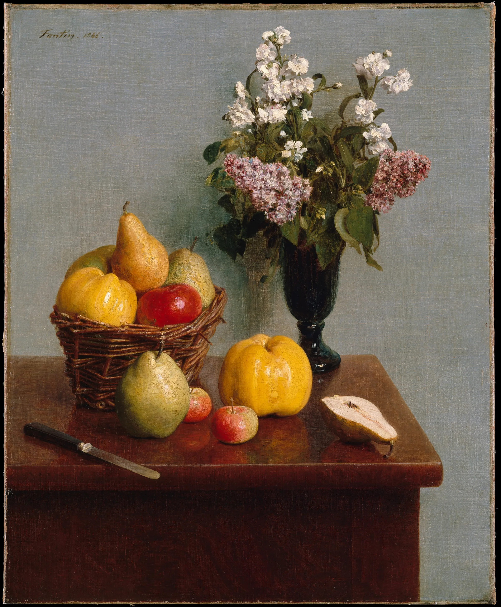
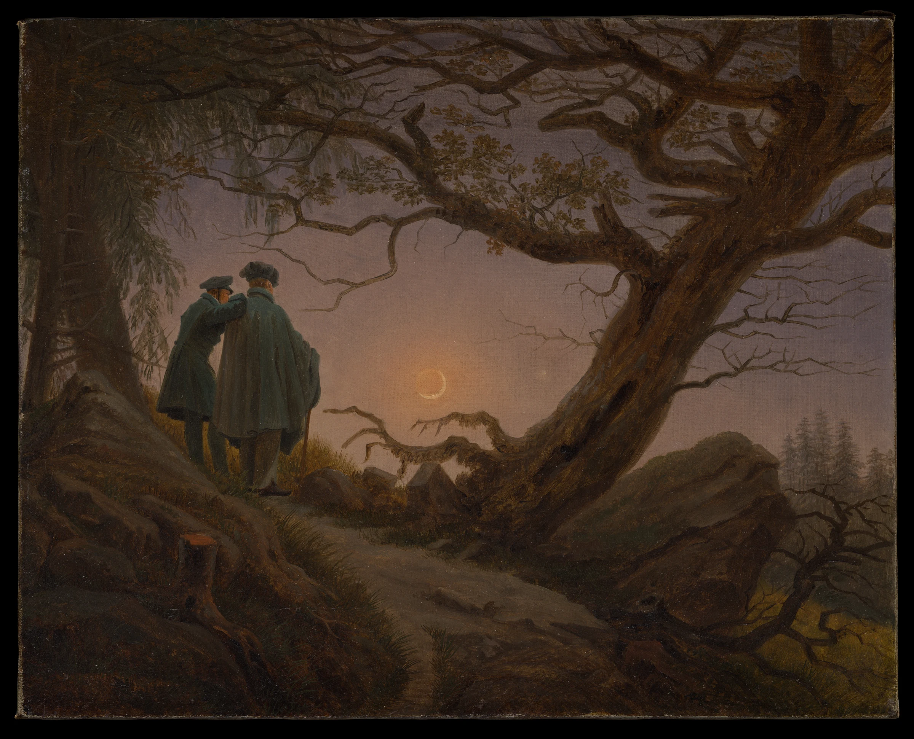
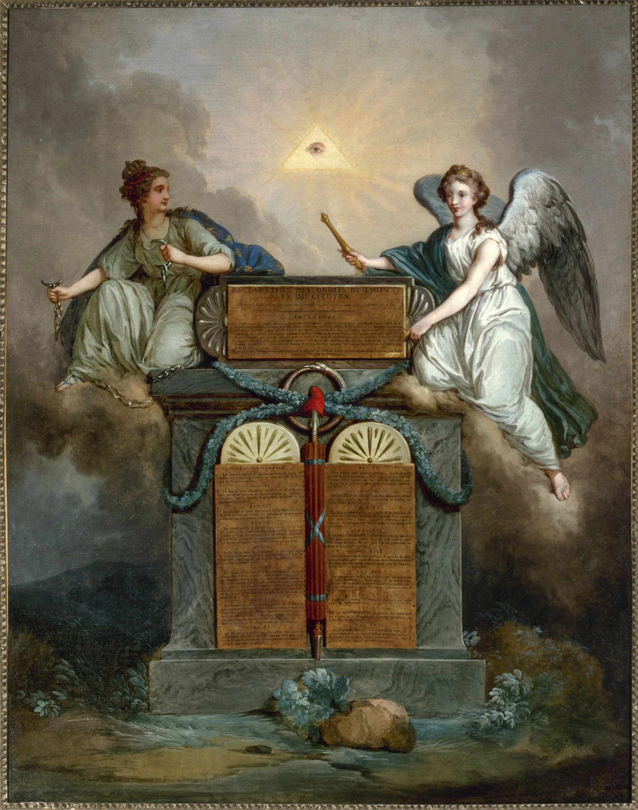
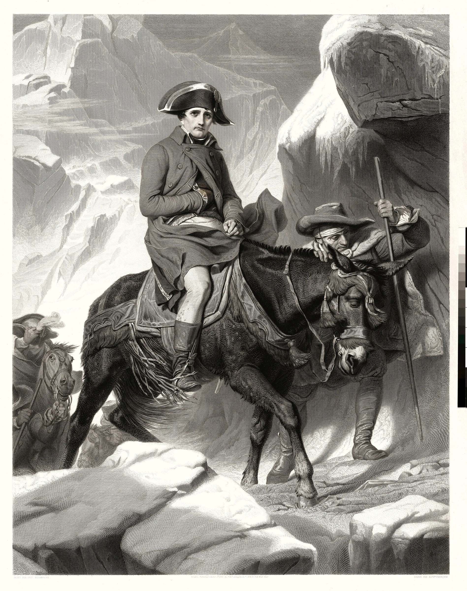
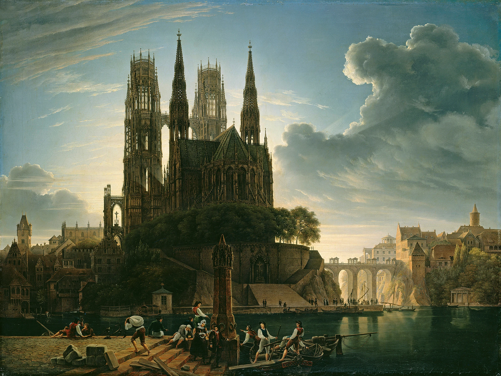

Vom Ichzur Welt
„So ist auch die Philosophie ihre Zeit in Gedanken erfaßt.“
哲学，是它的时代在思想中的把握。
黑格尔 ·《法哲学原理》序言1770 — 1831 GEORG WILHELM FRIEDRICH HEGEL


Das Wahreist das Ganze.真理是全体
彼此排斥的环节，
恰恰构成整体的生命。
Knospe · Blüte · FruchtWiderlegung · Bewahrung
歌德读到「花蕾被花朵否定」，就放下了书——没读到下一页的「但是」。
走向另一个我

Wirklichkeit现实
自由，需要在共同生活中
获得稳定的形式。
Was vernünftig ist, das ist wirklich.凡是合乎理性的，都是现实的。
一种制度的现存，还不足以证明它合理。
走进历史

Die Eule der Minerva beginnt erstmit der einbrechenden Dämmerung ihren Flug.
密涅瓦的猫头鹰，在黄昏降临时才起飞。
——《法哲学原理》序言
回到最初的追问